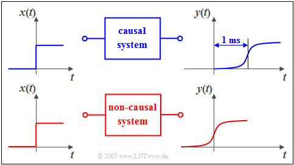
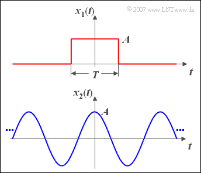

Signal#
Notation#
| Name | Description |
|---|---|
| Time function | \(x(t)\) |
| Spectral function | \(X(f)\) |
| Sampling Time | \(T_A = \frac{1}{f_A}\) |
| Sampling Frequency | \(f_A = \frac{1}{T_A}\) |
- Symbol Notation.
Rectangular Pulse#
mpl{name=rectangle}
fig, ax = plt.subplots()
N = 100 # sample count
P = 10 # period
D = 5 # width of pulse
sig = np.arange(N) % P < D
ax.plot(sig)
Signal Categories#
Details:
If a signal is both value--continuous and time--continuous, it is called a analog signal. A digital signal, on the other hand, is always value--discrete and time-discrete and the message contained therein consists of the symbols of a symbol set.
- Time-Continuous Signal: the signal parameter \(t\) is defined at any given time.
- Time-Discrete Signal: the signal parameter is defined only at the discrete points \(t_v = v \cdot T_A\).
- Deterministic Signal: the time function \(x(t)\) can be described completely in analytical form.
- Random Signal: its time function \(x(t)\) is not -- or at least not completely -- describable in mathematical form. Such a signal cannot be predicted exactly for the future.
- Causal Signal/System: if \(x(t)\) does not exist for all times \(t < 0\) or is identical zero.
- Energy--Limited Signal: if \(x(t)\) has finite energy \(E_x\) and infinitely small power (\(P_x \to 0\))
- Power--Limited Signal: if \(x(t)\) has finite power \(P_x\) and infinite energy \((E_x \to \infty)\).
Examples of Signals

You can see a causal system in the upper graphic: If a unit step function \(x(t)\) is applied to its input, then the output signal 𝑦(𝑡) can only increase from zero to its maximum value after time 𝑡=0. In the lower graph the causality is no longer given. As you can easily see in this example, an additional runtime of one millisecond is enough to change from the non-causal to the causal representation.
Energy--Limited and Power--Limited Signals#
Both, energy and power of a signal, are dependent on the resistance 𝑅. In order to eliminate this dependency, the resistance 𝑅=1Ω is often used as a basis in communications engineering. Then the following definitions apply:
The energy in \(\si{\text{V}^2\text{s}}\) of the signal \(x(t)\) is:
with \(T_M\) is the assumed measurement duration during which the signal is observed, symmetrically with respect to the time origin (\(t=0\)). In general, this time interval must be chosen very large; ideally \(T_M\) should be towards infinity.
The (mean) power in \(\si{\text{V}^2}\) is the energy divided by the time before the limit crossing:
with \(T_M\) is the assumed measurement duration during which the signal is observed, symmetrically with respect to the time origin (\(t=0\)). In general, this time interval must be chosen very large; ideally \(T_M\) should be towards infinity.
Example Energy and Power Calculations
Now the energy and power of two exemplary signals are calculated.

The upper graphic shows a rectangular pulse \(x_1(t)\) with amplitude \(A\) and duration \(T\).
- The signal energy of this pulse is \(E_1 = A^2 \cdot T\).
- For the signal power, division by \(T_{\rm M}\) and limit formation \((T_{\rm M} \to \infty)\) the value is \(P_1 = 0\).
For the cosine signal \(x_2(t)\) with amplitude \(A\) applies according to the sketch below:
- The signal power is \(P_2 = A^2/2\), regardless of the frequency.
- The signal energy \(E_2\) (integral over power for all times) is infinite.
Signals and Spectrum#
| Time \(x(t)\) | Frequency \(X(f)\) |
|---|---|